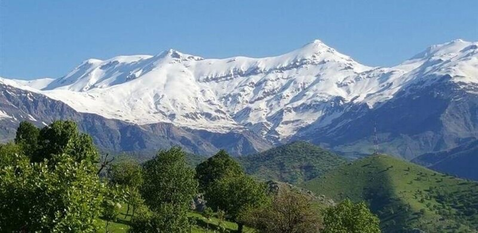

Justice, from the ground up.
دادپەروەری، لە خوارەوە بۆ سەرەوە.
Edalet, ji binî ve.
We're a grassroots organization led by women and young people in Southern Kurdistan (Kurdistan Region of Iraq) — organizing online and offline for justice, open access to information, and the right to tell our own stories.
ئێمە ڕێکخراوێکی ناحکومیی بنچینەیین لە باشووری کوردستان، کە ژنان و گەنجان سەرکردایەتیی دەکەن. هەم لە ئۆنلاین و هەم لە مەیداندا کار دەکەین بۆ دادپەروەری، بۆ دەستڕاگەیشتنی ئازاد بە زانیاری، و بۆ مافی ئەوەی خۆمان چیرۆکی خۆمان بگێڕینەوە.
Em rêxistineke ne-hikûmî ya bingehîn in li Başûrê Kurdistanê, ku jin û ciwan pêşengiya wê dikin. Em hem li ser înternetê hem jî li qadê dixebitin: ji bo edaletê, ji bo gihîştina azad a agahiyan û ji bo mafê ku em çîrokên xwe bi xwe vebêjin.

We're not one voice. We're many.
ئێمە تەنها یەک دەنگ نین. دەنگی زۆرین.
Em ne dengekî tenê ne. Em gelek in.
JusticeNow is a women- and youth-led organization in Southern Kurdistan (Kurdistan Region of Iraq), working where justice, digital advocacy, and civic life meet.
دادپەروەری ئێستا ڕێکخراوێکە لە باشووری کوردستان کە ژنان و گەنجان سەرکردایەتیی دەکەن. کارەکانمان لەو خاڵەدان کە دادپەروەری، داکۆکیی دیجیتاڵی و بەشداریی مەدەنی تێیدا بەیەک دەگەن.
JusticeNow rêxistineke li Başûrê Kurdistanê ye ku jin û ciwan pêşengiya wê dikin. Em li wê derê dixebitin ku edalet, parêzvaniya dîjîtal û jiyana sivîl digihîjin hev.
We don't speak for communities — we organize with them. The people living with injustice know it best. Online spaces are where we push back, share what we know, and take back the story.
ئێمە لە جیاتی کۆمەڵگاکان قسە ناکەین، بەڵکو لەگەڵیان کار دەکەین. ئەوانەی ڕۆژانە نادادپەروەری دەچێژن، لە هەمووان باشتر دەیناسن. لە بۆشاییە ئۆنلاینەکاندا بەرەنگاری دەبینەوە، زانیاری بڵاو دەکەینەوە و چیرۆکەکانمان دەگەڕێنینەوە بۆ دەستی خۆمان.
Em ne li şûna civakan diaxivin, em bi wan re dixebitin. Kesên ku her roj neheqiyê dijîn, wê ji her kesî çêtir nas dikin. Li qadên online em li ber xwe didin, zanîna xwe parve dikin û çîrokên xwe vedigerînin destê xwe.
No center. Many circles.
ناوەندێک نییە. بازنەی زۆر هەن.
Navend tune. Gelek xelek hene.
We work side by side, not top-down. Instead of one office calling the shots, we connect small circles — students, neighbors, artists, organizers — who lead in their own communities and share what they learn with each other.
ئێمە شان بە شان کار دەکەین، نەک لە سەرەوە بۆ خوارەوە. لە جیاتی ئەوەی هەموو بڕیارێک لە یەک شوێنەوە بدرێت، بازنە بچووکەکان پێکەوە دەبەستینەوە: خوێندکاران، دراوسێکان، هونەرمەندان و چالاکوانان، کە هەر یەکەیان لە کۆمەڵگای خۆیدا پێشەنگە و ئەزموونەکانی لەگەڵ ئەوانی تر هاوبەش دەکات.
Em mil bi mil dixebitin, ne ji jor ber bi jêr. Li şûna ku hemû biryar ji cihekî tenê bên dayîn, em xelekên biçûk bi hev ve girê didin: xwendekar, cîran, hunermend û çalakvan, ku her yek di civaka xwe de pêşeng e û ezmûnên xwe bi yên din re parve dike.
- Decisions made togetherبڕیارەکان بە کۆمەڵ دەدەینEm bi hev re biryar didin
- Led by lived experienceئەزموونی ژیان ڕێگامان نیشان دەداتEzmûna jiyanê rê nîşanî me dide
- Built to last, not to trendبۆ ماوەی درێژ، نەک بۆ ترێندێکی کاتیJi bo demeke dirêj, ne ji bo trendekê
Loud online. Rooted offline.
دەنگمان لە ئۆنلاین بەرزە. ڕەگمان لە مەیدانە.
Li online dengê me bilind e. Rehên me li qadê ne.
Flip the narrative
گێڕانەوەکە بگۆڕە
Vegotinê biguherîne
We use digital tools to challenge the stories told about us — and tell our own.
بە ئامرازە دیجیتاڵییەکان بەرەنگاری ئەو چیرۆکانە دەبینەوە کە دەربارەی ئێمە دەگوترێن، و چیرۆکی خۆمان دەگێڕینەوە.
Em bi amûrên dîjîtal li hember wan çîrokên ku li ser me tên gotin radiwestin, û çîroka xwe bi xwe vedibêjin.
Open the doors
دەرگاکان بکەرەوە
Deriyan veke
Information is power. We make it easier for everyone to find it, understand it, and use it.
زانیاری هێزە. کار دەکەین بۆ ئەوەی هەمووان بە ئاسانی بیدۆزنەوە، لێی تێبگەن و بەکاری بهێنن.
Agahî hêz e. Em dixebitin da ku her kes bi hêsanî bigihîje wê, jê fam bike û bi kar bîne.
Organize from below
ڕێکخستن لە خوارەوە
Ji jêr ve rêxistinkirin
Advocacy led by communities themselves — beyond likes, beyond visibility.
داکۆکییەک کە خودی کۆمەڵگاکان ڕابەرایەتیی دەکەن — لە لایک و دەرکەوتن زیاتر.
Parêzvaniyek ku civak bi xwe pêşengiya wê dikin — ji like û xuyabûnê wêdetir.
Care is political
گرنگیدان بە یەکتر سیاسییە
Lênêrîn siyasî ye
We look after each other. Collective care keeps the movement alive for the long run.
ئاگامان لە یەکترە. گرنگیدان بە یەکتر بزووتنەوەکە بۆ ماوەیەکی درێژ زیندوو ڕادەگرێت.
Em li hev xwedî derdikevin. Lênêrîna hevbeş tevgerê ji bo demeke dirêj zindî dihêle.
See what we're up to
بزانە ئێستا خەریکی چین
Binêre em niha bi çi re mijûl in
Elef Project
پڕۆژەی ئەلف
Projeya Elef
Our flagship project, with its own home at elef.space.
پڕۆژە سەرەکییەکەمان، کە ماڵپەڕی تایبەتی خۆی هەیە: elef.space
Projeya me ya sereke, bi malpera xwe ya taybet: elef.space
Statements
بەیاننامەکان
Daxuyanî
Where we stand, in our own words.
هەڵوێستەکانمان، بە دەنگی خۆمان.
Helwestên me, bi gotinên me.
Our Partners
هاوبەشەکانمان
Hevkarên me
The groups and collectives we build with.
ئەو گرووپ و کۆمەڵانەی پێکەوە کاریان لەگەڵ دەکەین.
Kom û kolektîfên ku em bi wan re dixebitin.
Got a collective? Let's connect.
گرووپێکتان هەیە؟ با پێکەوە کار بکەین.
Koma we heye? Werin em bi hev re bixebitin.
We love working with feminist, youth-led, and rights-based groups — big or small, formal or not.
خۆشحاڵ دەبین لەگەڵ گرووپەکانی جوڵانەوەی ژنان، گرووپە گەنجەکان و ڕێکخراوە مافپەروەرەکان کار بکەین — گەورە بن یان بچووک، فەرمی بن یان نافەرمی.
Em kêfxweş in ku bi komên tevgera jinan, komên ciwanan û rêxistinên mafparêz re bixebitin — mezin an biçûk, fermî an ne fermî.